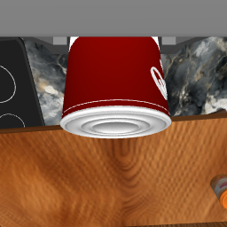
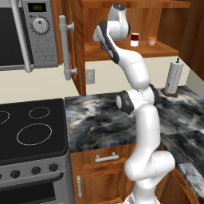
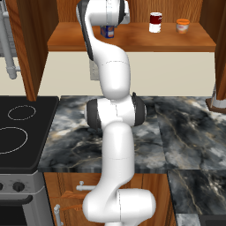
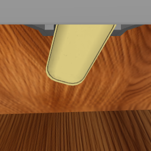
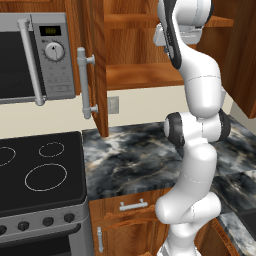
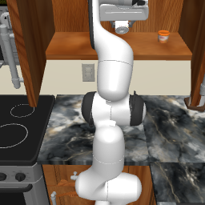

SearchShelfBack — 棚の奥から対象物を探す
RoboCasa365 のキッチンで、開けたキャビネットの奥にある対象物を探す GT スクリプト。 遠隔操作なし。Franka（PandaOmron）が正面観察 → 横覗き → 手前をずらす → 奥を覗く → 別商品をどかす → 再観察 → pick まで通す。
seed 5 で成功。 土台を 16 cm 後退させたあと開口から水平に入り、奥の缶を掴んで棚の外まで引き出し、+16.9 cm 持ち上げて保持。 所要 29.9 秒 · 808 フレーム · p-ws-40 · 2026-10-19。

タスク
| 名前 | SearchShelfBack（Kitchen サブクラス） |
|---|---|
| 言語指示 | Search the back of the open cabinet for the target object. Move blocking items aside if needed, then pick the target. |
| 成功条件 | グリッパが target を保持している（gripper_obj_far が偽）かつ、開始高さから十分持ち上がっている |
| ロボット | Franka PandaOmron（7-DoF アーム + ホロノミック移動台 + グリッパ） |
| 制御 | OSC_POSE デルタ。基準は origin フレーム、_goal_update_mode=achieved。テレオペなし |
| 環境 | RoboCasa365 Kitchen · split=pretrain · キャビネットは最初から開いている |
| カメラ | robot0_agentview_left / center / robot0_eye_in_hand（256×256） |
| 配置 | 対象・邪魔物はすべて棚の中。カウンタ上のピックではない |
物体配置
キャビネット内の y は手前 = −1、奥 = +1。jam / canned_food のみ（ボトルは OSC ピンチで滑る）。
| 名前 | 役割 | 配置 |
|---|---|---|
target | 奥の対象。最終的に pick する | 棚内 pos=(0.0, 1.0) size 0.40×0.18 |
front_obj | 手前の邪魔物。ずらして奥を見せる | 棚内 pos=(0.0, −1.0) size 0.40×0.18 |
other_obj | 横の別商品。開口から遠いときはスキップ | 棚内 pos=(0.75, 0.15) size 0.28×0.18 |
7 段階
開口の手前 20 cm で棚口の高さに静止し、手前の物を見る。
開口に戻ってから横 16 cm ずらし、隙間から中を見る。
front_obj を掴んでカウンタへ。掴めなければ撤退。
奥の target の手前 18 cm で再観察。
開口から 40 cm 超ならスキップ。seed 5 は 0.44 m でスキップ。
target を開口からもう一度見る。
開口から水平に入り、掴んで同じ高さで引き出し、外で持ち上げる。
seed 5 の結果
| 段階 | 結果 | メモ |
|---|---|---|
| 0 土台後退 | 到達 | 16 cm。ベース 2.547 → 2.677、EE 2.297 → 2.428 |
| 1 正面観察 | 到達 | 棚口の高さで静止 |
| 2 横覗き | 到達 | |
| 3 手前ずらし | 把持失敗 → 撤退 | 微小リフト dz −0.003 / +0.018。front はその後 z=0.25 へ落ち、結果的に開口から外れた |
| 4 奥を覗く | 到達 | |
| 5 別商品 | スキップ | other_obj が開口から 0.44 m |
| 6 再観察 | 到達 | |
| 7 pick target | held=True | dz = +0.169 m · 位置 [2.246, −0.824, 1.622] |
動画
途中・終了フレーム





うまくいくまでに試したこと
| 試み | 結果 |
|---|---|
| カウンタの上で pick（開いた棚の手前） | 掴めるが、棚の中の探索ではない |
| 壁キャビネットを上から屋根越しに降りる | OSC が発散。EE が z=1.67 や y=−5 へ飛ぶ |
| カウンタ高さ SAFE_Z=1.12 のまま壁棚へ | 棚面（物体 z≈1.44–1.49）に届かない |
| 開口の高さで水平に入る | 観察と進入は安定。把持はまだ外れやすい |
| 移動台を 16 cm 後退させてから腕を入れる | キャビネット前面との干渉が減る |
| 掴めたかを 3 cm リフトで確認し、失敗なら引き出す前に中止 | 床へ落とす失敗を止めた |
| 引き出しは gain 2.0・EE の z を固定し、外に出てから +14 cm 持ち上げ | 棚縁で落とさなくなる |
| ボトルをやめて jam / 缶だけにする | ピンチがかかる |
| seed 1–4 の quick pick | 降下タイムアウト、または未把持 |
| seed 5 + 上記の組み合わせ | target を保持したまま lift-out まで成功 |
Pick の中身
開口から水平に入り、掴んで同じ高さで引き出す。屋根を突き抜けない。
| 手順 | 内容 |
|---|---|
| mouth | 開口 XY、棚口の高さへ移動 |
| in | 物体の手前 8 cm、物体 z + 5 cm まで進入 |
| descend | 中心、だめなら 0.35×高さ でもう一度 |
| close | 42 ステップ閉じる → 3 cm nudging → 保持判定 |
| 失敗時 | 開口へ撤退。引き出さない |
| extract | 今の EE 高さを保ったまま開口までゆっくり戻る |
| lift-out | 棚の外で +14 cm 上げて保持 |
再実行
p-ws-40、conda robocasa、キッチンアセット導入済み。
ssh p-ws-40 conda activate robocasa export MUJOCO_GL=egl CUDA_VISIBLE_DEVICES=1 cd ~/robocasa_ai_worker python scripts/scripted_search_shelf_franka.py --seed 5 --backup 0.16 \ --out-dir outputs/franka_search_shelf
実装: scripts/scripted_search_shelf_franka.py（環境クラス SearchShelfBack + 上記 7 段階）。 MimicGen は未使用。キャビネットを開ける primitive は使わない（最初から開いている）。